"Интересно, каков на вкус блюз в такой маленькой стране", - думал я, сидя в ночном автобусе Петербург - Таллинн. "Чем больше страна - тем больше хорошей музыки, чем меньше страна - тем меньше хорошей музыки? Нет, размер значения не имеет; все зиждется лишь на людском мировоззрении и их отношении к музыке.".
"Еду в Европу, там все должно быть хорошо", - подумал я и заснул.
Знаменитый 18й фестиваль "Augustibluus" в эстонском городе Хаапсалу прошел 5 и 6 августа, в два контрастных по погоде, но схожих по эмоциональному наполнению, дня. Интернациональный состав участников охватывал самые разные направления блюза и околоблюзовой музыки - техасские гитарные риффы, хриплый электрический деревенский блюз, буги-вуги, позитивный серф, мощный бразильский огонь, "привет из эстрады 80х", big band.
Интересно, что несмотря на свое совсем не урбанистическое расположение - в, по-русски говоря, райцентре - фестиваль смог собрать максимальное количество зрителей. В данном случае, как раз можно говорить про некий максимум не пафоса ради, а опираясь на факты: место проведения - это руины исторического замка, стены которого, как было успешно проверено, не резиновые а каменные. И этот замок был "наполнен до краев".
За причинами далеко ходить не нужно. Несмотря на то, половина населения Эстонии может без зазрений совести считаться русскими, люди там живут другие, мыслят иначе и, соответственно, действуют по-другому. Для этих легких на подъем граждан вполне естественно в конце рабочего дня сесть в машину, проехать 200 км по красивого города на берегу Балтийского моря для того, чтобы отдохнуть на замечательном оупенэйре.
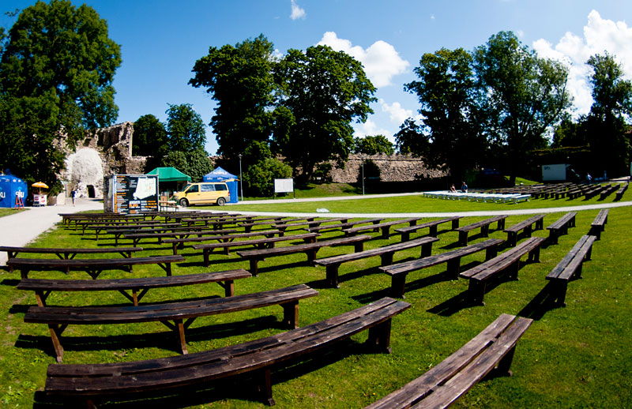
Зрители со всей Эстонии, из России и Финляндии, а также наверняка из остальных балтийских стран и, может быть, из более западных краев создали то, что является одним из столпов успеха фестиваля - мощную поддержку каждого выступающего. Этому "фанатскому сектору" мог бы позавидовать любой организатор - люди заводятся с первых же аккордов, всеми доступными способами доносят до музыкантов свой восторг, благодарят их при малейшем затишье, подпевают там, где их об этом просят. Одним словом, люди пришли послушать хорошую музыку, получить удовольствие и не стесняются этого.
Обратной стороны медали, к сожалению, свойственной любому отечественному фестивалю, замечено не было. То ли волшебство музыки тому виной, то ли магия древнего замка, то ли факт, что это европейский фестиваль, но за все два дня не было замечено ни одной драки, ни одного "друга зеленого змея", ни одного нарушителя любого вида спокойствия и личного пространства.
"Хожу тут в ночи с фотоаппаратом, паспортом и кошельком среди толп людей и совершенно не беспокоюсь", - говорил я нашему водителю в один из перерывов, - "причем, с моей паранойей к сохранности вещей это меня самого удивляет. Но почему-то я точно знаю, что здесь мои вещи никому не нужны. Кроме меня самого".
"Как можно держать все под контролем - да никак", - говорил один российский писатель, - "Устраиваем фуршет, следим за тем, чтобы все было чинно, раздаем кнуты и пряники - все хорошо, все довольны. А потом какой-нибудь нехороший человек, например, гардеробщик, нахамит гостю, и все - понеслись гневные статьи и разгромные фельетоны, мол, этот кружок вообще ничего сделать нормально не может".
В этих строках можно узнать среднестатистический фестиваль в любом российском городе - если возникла какая-нибудь проблема, пиши пропала. И отправляйся в долгое путешествие по "инстанциям", как главный герой любого из трех романов Франца Кафки. "У Вас не тот билет", - говорит охранник, "но я не знаю, кто может решить эту проблему. Компетенция не моя". Тех, кто не сталкивался с такими суровыми реалиями, можно только поздравить и пожелать и в дальнейшем ставить на ту же масть.
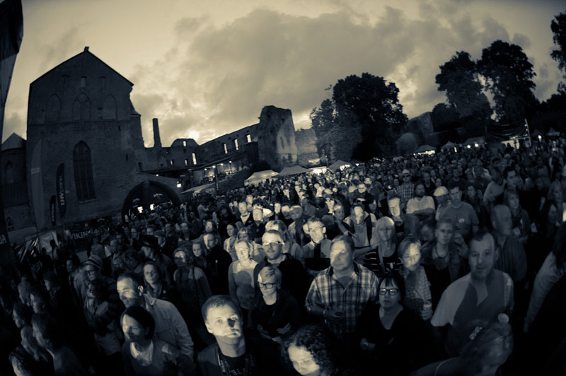
Так что, европейский фестиваль может удивить зрителя нового - организация на "Augustibluus" была на высшем уровне. Кто когда играет, после кого ставит звук, где находится за кулисами, во сколько можно заходить зрителям на территорию, что делать, если кончилось пиво, можно ли пройти с фотоаппаратом - персонал решал эти вопросы, как орехи щелкал.
Если возникала какая-нибудь проблема, можно было смело искать среди зрителей желтую футболку (форму персонала фестиваля), и обращаться к любому из работников. Если тот был не уполномочен, вопрос передавался дальше по цепочке. Любое дело решалось в течение 10 минут.
И дело не в ежовых рукавицах - их-то как раз и не было, более дружескую атмосферу среди организаторов разных рангов найти сложно. То, что делали работники фестиваля называется логичной и вполне естественной в человеческой среде взаимопомощью, сидящей в крови у каждого европейца. Раз ты работаешь на мероприятии, твоя цель обеспечить его участникам комфортное пребывание. В этом вся соль.
Сначала мне забыли дать бейдж фотографа. Я рассказал о своей проблеме главному звукорежиссеру - через пять минут у меня было все, что нужно. Во второй день я оказался без браслета-пропуска (сорвал его перед сном минувшей ночью), подошел к какому-то парню, он передал меня тому, кто дал браслет. Да, я был слегка шокирован такой слаженностью.
Первый день фестиваля начался с оркестра. В многолюдном бэнде из Таллинна под названием Tallinna Muusikakooli Sumfooniaorkester ja Uku Suviste играют музыканты от мала до велика - совсем юные флейтистки и скрипачки, ритм-секция постарше, дирижер в зрелом возрасте. Словом, обычное детище какой-нибудь музыкальной школы.
Звучит как описание скучноватой классической музыки, если бы не один момент. Этой музыкальной школой можно смело гордиться на всю страну, а участников оркестра посылать на фестивали по всему миру. Такую мощную и слаженную игру нескольких десятков человек редко где услышишь, особенно на разогреве концерта, отличающегося по тематике от возможностей оркестра (здесь, конечно, имеется в виду не оркестр-аккомпаниатор, как на концертах Альберта Кинга, а солирующий ансамбль).
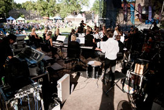
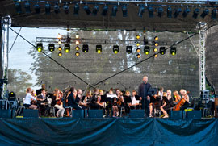
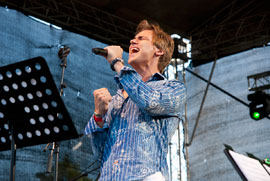
Пресного звучания у оркестра не было, провисаний тоже, а в те моменты, когда зритель должен начинать уставать от инструментальной музыки, выходил молодой солист и пел под их аккомпанемент какие-то эстонские песни. Потом снова исчезал за кулисами, и снова выходил. С одной стороны, это трюк, с другой грамотно срежиссированное отделение. Но, чем бы это не было, оно работает.
Вторыми выступали ребята из России, Jumping Cats, одна из лучших групп с московской блюзовой сцены. Выбор организаторами "котов" в качестве русского ансамбля, наверное, прибавило нашей родине много очков в глазах европейцев.
То, что российский блюз на 95% играется в маленьких клубах, непреложный факт. То, что звук в этих клубах разительно отличается от фестивального - второй непреложный факт. Ну а то, что, несмотря на это, Jumping Cats звучали на уровне остальных групп (даже тех, кто чувствует себя на большой сцене как у себя дома), всецело заслуга этого веселого трио.
"Коты" сразу же понравились публике. После спокойного оркестра электрический блюз ее взбодрил, поднял на ноги. И именно они положили начало настоящему зрительскому экстазу, который примет к концу дня немалый размах.
Диалог с публикой, по своей сути, дело не из легких. Особенно, с незнакомой публикой, говорящей на другом языке. И если для того, чтобы вызывать овации во время пятиминутных соло-представлений участников, нужно просто хорошо играть, то чтобы люди подпевали в песнях, которые впервые слышат, необходим эмоциональный контакт. Контакт - был, овации - были, благодарности музыкантам поступали еще в течении двух дней, на фестивале, на улицах Хаапсалу и даже на улицах Таллинна.
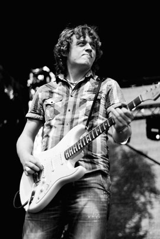
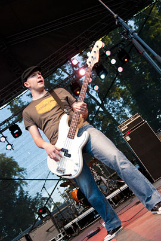
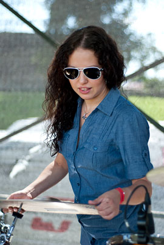
Россия с американской музыкой выступила хорошо.
"Ребята играют New Orleans", заметил я, как только услышал знакомое барабанное вступление, "здесь никогда не обходилось без пения с залом, оно тут физически необходимо, без него песня теряет половину своей мощи. Смогут ли эстонцы?".
Эстонцы смогли, они феерично справились с этой простой подпевкой, сделали это так, как даже русская блюзовая аудитория, у которых эта песня вместо крови по венам течет, никогда не могла.
Fernando Noronha & Black Soul успешно подхватили эстафетную палочку, окончательно собрав всех сидящих людей около сцены, где яблоко еще могло, в принципе, упасть, но только небольшое.
В послужном списке этих бразильцев, играющих вместе больше 15 лет, есть и несколько успешных альбомов, и мастер-классы по всему миру, и разогревы Би Би Кинга и Карлоса Сантаны. А о том, что они не собираются отпускать публику ни на сантиметр, группа заявила сразу же - прозвучало вступление к первой песне, а люди уже знали, что независимо от музыки - быстрой или медленной, мелодичной или просто ритмичной, песен или импровизаций - они в ближайший час никуда от сцены не денутся.
Гитара, бас, ударные и хэммонд-орган - квартет с каждой минутой все больше будоражил зрителей собственными песнями. Из "шлягеров" прозвучала только Will It Go Round In Circles Билли Престона, как и подобает таким композициям, с клавишником на вокале.
Следом на сцене снова стало многолюдно - Estonian Dream Boogie Woogie Band. Название прекрасно говорит о том, из какой страны эта группа. Взятую в первом сете планку Эстония успешно сохранила, и даже перепрыгнула.
Ситуация была схожая - музыка, которая по своей структуре должна надоесть через пять песен, держала людей в экстазе полтора часа, с несколькими выходами на бис и продолжительными финальными кодами.
Буги-вуги, рок-н-ролл, отголоски хард-рока, блюз и легкий джаз сменяли друг друга. Счет времени потерялся в самом начале, но это никого совершенно не тревожило. Johnny B. Goode, пятнадцатиминутная Love Sick (Боб Дилан бы наверняка обрадовался такому хронометражу) и много других неизвестных, но не менее драйвовых, английских и эстонских песен дали понять, что дело не в жанре музыки, а в том, что умеючи можно творить чудеса.
Завершал первый день Кирк Флетчер - современный "фредди кинг" из Америки. Сравнение с одним из королей неслучайно, Кирк играет такой же преимущественно инструментальный блюз, он такой же большой и такой же черный. Конечно, под это описание подходят сотни современных музыкантов, но именно на Флетчера смотришь и думаешь "вот он, Фредди Кинг".
После первых четырех групп публику, наверное, сложно было чем-то удивить, но раз уж на фестивале творилось волшебство, почему бы и нет. Длительные инструментальные композиции сменялись "перепалками" гитары и органа, а те через некоторое время - шутками над ритм-секцией на английском языке. И так много много раз по кругу. Песни разные, дуэли инструментов разные, шутки, к счастью, тоже разные.
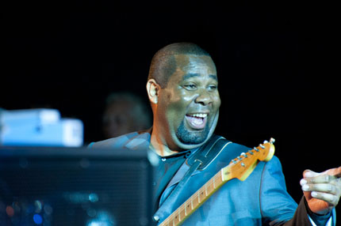
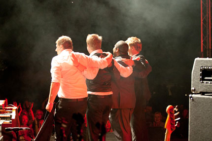
Игру Кирка Флетчера на гитаре можно смело определить ненавистным среди "продвинутых меломанов" термином - запилы. Запилы, хорошие не только с эмоциональной стороны, но и с музыкально-гармонической. Тот, кто скажет, что любые запилы хороши (или плохи - глубина чувств та же), пусть сравнит любую песню Ингви Мальмстина с I Smell a Rat Бадди Гая или же с Congo Square с последнего альбома Флетчера.
Второй этап фестиваля начался с электрического деревенского блюза из, как ни странно, Финляндии. Похожий на Тома Уэйтса по внешности и на Джуниора Кимброу по музыке, неоднократный участник разных европейских мероприятий Jo' Buddy в последнее время выступает со своим сыном Down Home King III.
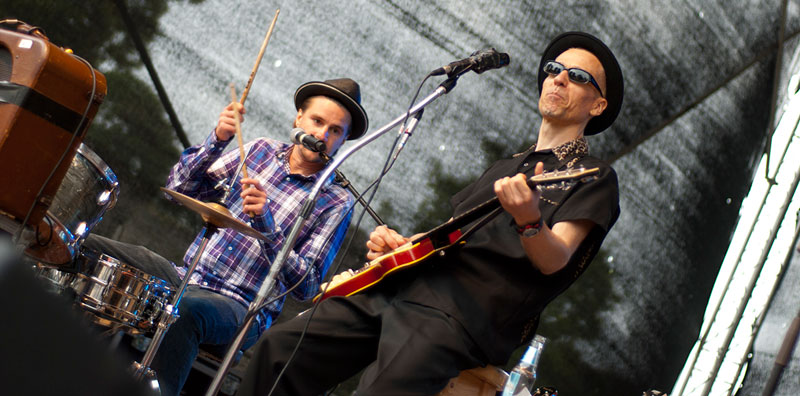
"Сначала у нас была целая группа", - говорит Джо Бадди, - "нас было много, мы играли громкий блюз со множеством гитар. Там были два моих первых сына - Down Home King I и Down Home King II. Потом мне это надоело, я взял Третьего, и получилось то, что нужно. Смотрите, это король Финляндии, Down Home King III.
Если играть блюз перед новой аудиторией и держать в кулаке весь зал просто сложно, то делать это в таком минималистичном составе без палочки-выручалочки баса (ритмом которого всегда можно дожать подогретую публику) как ломать голову над доказательством Великой Теоремы Ферма.
Учитывая, что буквально пять минут назад закончился дождь, что это был разогревающий сет, что люди еще лениво ютились по скамейкам и отогревались "Джим Бимом", Джо Бадди с сыном справились со своей задачей великолепно. И даже не обращая внимание на эти тормозящие факторы, можно уверенно считать, что их отделение было одним из лучших за все два дня, как бы не трудно было искать лучших среди таких бриллиантов.
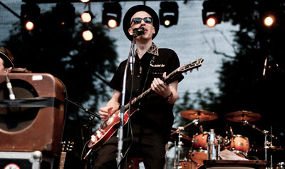
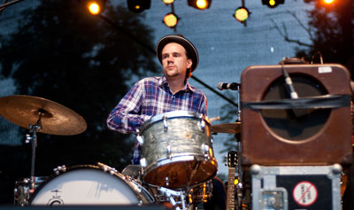
Несмотря на то, что такая музыка сейчас не в особом ходу среди привыкших к красивым соло и богатым аранжировкам слушателям, сырой кантри-блюз, электрические буги и рок-н-роллы пришлись по нраву тем счастливчикам, кто, несмотря на непогоду, выбрался в этот день к самому началу концерта.
Следующие эстонцы - Vaigla Bros - подсыпали ложку дегтя в прекрасный выдержанный мед, своим сумбурным фанком сбив все субъективное послевкусие от финна. Женский же вокал в нескольких песнях очень уж напоминал не самые лучшие русские блюзовые команды.
Что, конечно же, дало повод для веселья и шуток в их сторону. В этом еще одна прелесть такого фестиваля - ты не задумываясь берешь все положительное из любой ситуации, какой бы она не была.
Американцы Trampled Under Foot начали свое отделение с длинного кантри-рок пролога, во время которого гитарист сидел в глубине сцены за барабанами и был человеком-оркестром, а ритм-секция сидела за кулисами и пила пиво.
И несмотря на невероятный вокал басистки, на их дальнейшую слаженную игру, на интересные и бодрые песни, именно это вступление так и осталось вершиной всего сета.
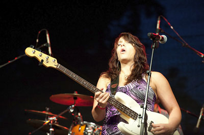
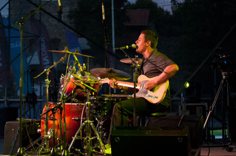
Интересно, что несмотря на такое очевидное название, несмотря на то, что они исполнили песню Rock'n'Roll, калькой с Led Zeppelin они не звучали. Их музыка совмещала в себе как блюзовый хард-рок, так и другие жанры музыки, куда цеппелины не "летали" - фанк, кантри, соул. И, хотя их сет было утомительно слушать целиком, общее впечатление строго положительное.
Хедлайнером завершающего дня фестиваля был эстонец Tonis Magi. Его присутствие в списке выступающих, особенно на такой позиции, сначала настораживало - понятия "звезда советской эстрады" и "фестиваль блюза" находятся на разных концах музыкальной палитры.
Но это предвзятое впечатление развеялось спустя минуту после его появления на сцене. Большой ансамбль с клавишами, духовыми и несколькими гитарами (как и подобает постсоветской музыке) заиграл что-то тяжелое, а Тынис Мяги сразу же снял все сомнения своим мощным голосом. Который он не только не потерял, но даже и не собирался этого делать.
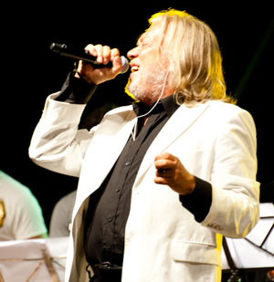
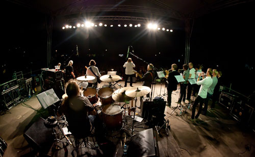
Не остатки былой славы звучали в ту последнюю фестивальную ночь, а свежий взгляд на кондовую эстонскую эстраду. Каждая песня искрилась энергетикой и порывом эмоций, Тынис для своих шестидесяти с лишним лет выглядел обретшим вторую (третью, десятую....) молодость и выдавал такое шоу своей харизмой, которую российские околоблюзовые позер-вокалисты даже в добром сне не видели.
Если русский человек слушает песни на незнакомом ему эстонском языке и испытывает те же чувства, что и окружающие его местные жители, это целиком заслуга музыки и того, как она преподнесена.
"Пойдем спать", - решили мы после завершения фестиваля. Проводив ребят до их отеля я отправился в долгий путь по трассе к своей гостинице. Впереди было сорок минут острого послевкусия. Слов не было, даже в мыслях, была только музыка.
Статьи о мероприятиях принято заканчивать выводом, но сейчас все очевидно и без него. Тем не менее, пару слов об организации добавить можно и нужно.
Российские фестивали грешат никому не понятным, но время от времени применяющимся ходом - они пытаются уместить в довольно сжатые временные рамки как можно больше выступающих. Не три, не пять и не семь. В идеале - чтобы афиша оказалась как можно плотнее заполнена именами.
Что получается - 20 минут на одну группу. Led Zeppelin бы даже одну песню не успели сыграть. Печально, что для музыкантов, которые не могут как следует даже разогреться, что для зрителей, у которых к последнему выступлению в голове каша.
На основной сцене "Augustibluus" выступили 5 групп в первый день и 4 во второй. С полноценными часовыми сетами и длинными перерывами (в идеале, люди хотят и все услышать, и перекусить, и выпить). На следующий день после такого концерта можно легко поделиться впечатлениями; какие-либо эмоции с фестивалей с пятнадцатью группами живут максимум час.
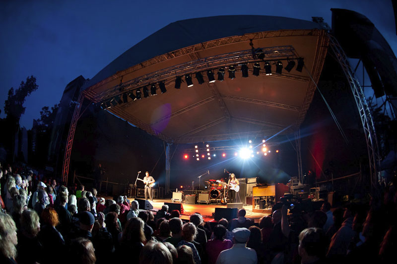
Про "перекусить и выпить" было сказано мимолетом, потому что к слову пришлось, но на деле это была важная часть в организации фестиваля. Сказать, что еды было много - недостаточно.
Ряд с палатками напоминал какой-нибудь посещаемый курорт, а не музыкальное мероприятие. Можно было купить все - от мороженного до шашлыка, кукурузы и кебаба. По совершенно адекватной цене, не дороже, чем вне фестиваля.
Выпивка продавалась всюду, поэтому, ни в одном месте в очередь за пивом не собиралось больше трех человек. В одном месте продавался виски "Джим Бим", его там же наливали в стакан и, по желанию, смешивали с колой. Конечно же, это был именно виски, а не самогон сомнительного производства.
Вообще, атмосфера на фестивале была такой, будто бы ты приехал на пикник дружеской компанией, которая постепенно разрослась до нескольких тысяч. Эта тусовка бы пришлась по душе любому мизантропу - ведь, в большинстве своем, людей не любят за то, как они себя ведут. А несколько сотен доброжелательных европейцев умилят каждого.
Красивая уютная крепость, скамейки позади танцпола, все необходимые удобства в достатке, много еды и пива, хороший звук и потрясающая музыка - с одной стороны, это некий сферический идеал фестиваля. Но, на самом деле, это то, как должно быть. Настоящая, правильная живая музыка выглядит именно так.
"Возвращаюсь из Европы, там все было хорошо", - подумал я и заснул.
Автор: Антон Ворожеев
Фото: Антон Ворожеев и Владимир Русинов